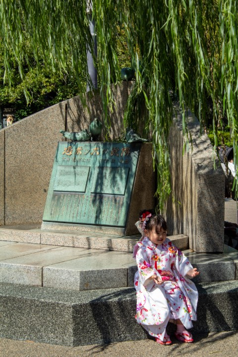
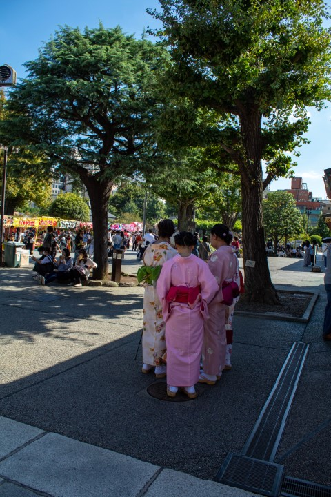
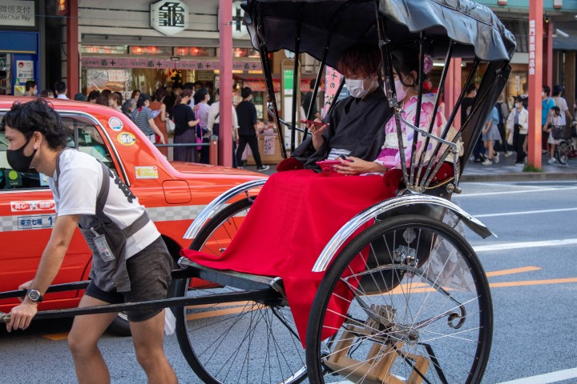
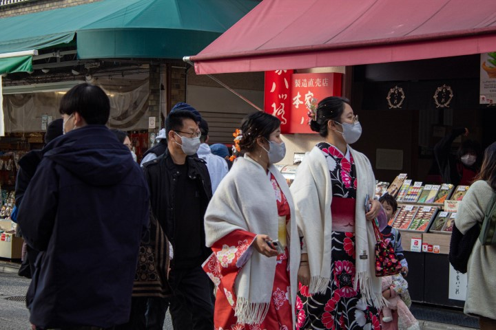
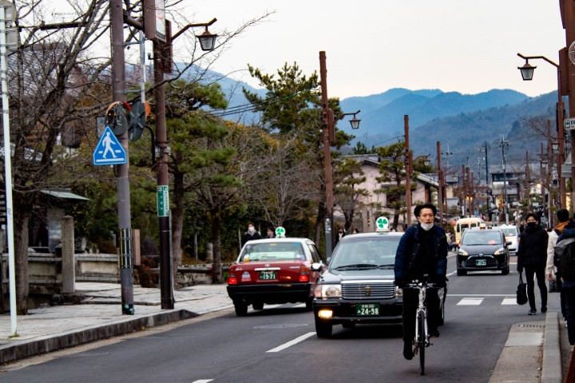
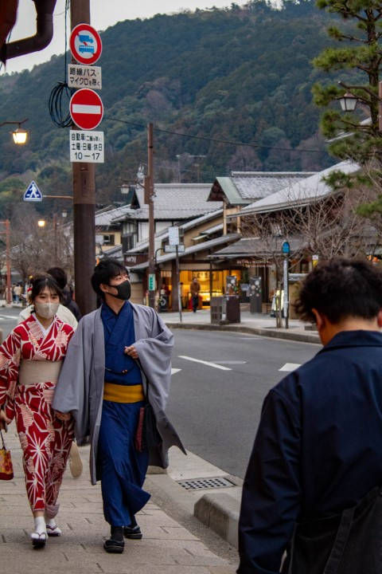

Tokyo
Mathys Paul 
Student in software engineering at Epitech Paris | Studying abroad in Tokyo at Shibaura Institute of Technology
My career path
Epitech
2019-2020First year undergraduate
Talos - Health Web Events
2020Internship 5 days a week for 6 months
Epitech
2020-2021Second year undergraduate
GiveAction
2021Internship 2 days a week for 6 month
Epitech
2021-2022Third year undergraduate
Saper Vedere
2022Internship 5 days a week for 6 months
Shibaura Institute of Technology
2022-2023First year graduate
My SIT courses
My favourite Anime

One Piece
The best !

Naruto
My favourite ! The one I grew up with.

My Hero Academia
The super star.


One-Punch Man
Weakness: too strong 😂

Demon Slayer
The most beautiful !
My pictures






